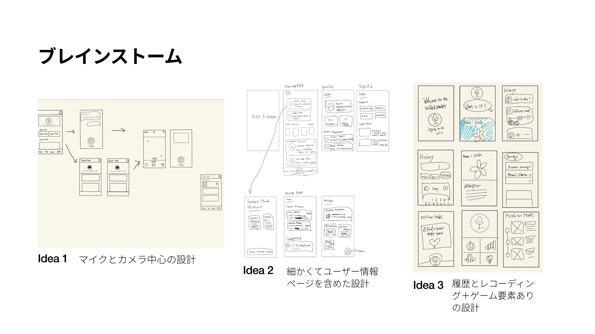
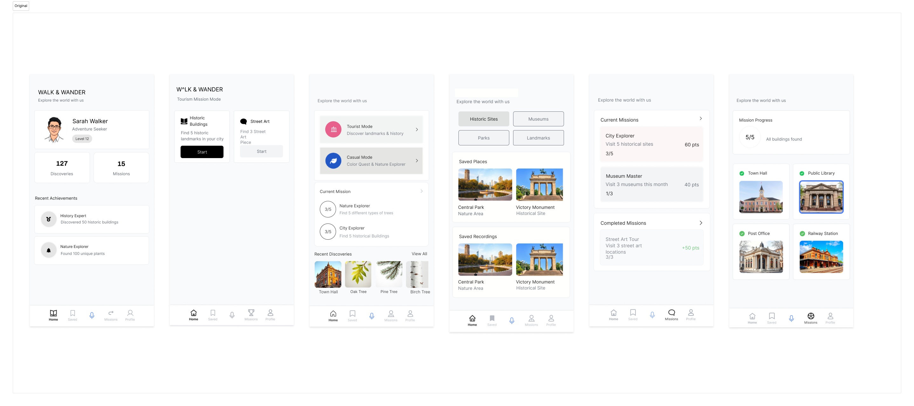
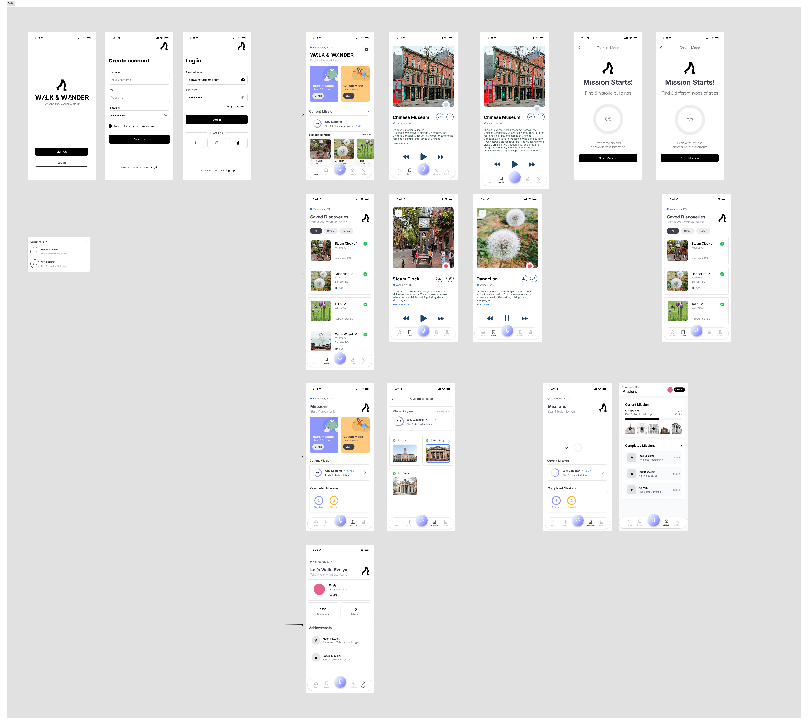
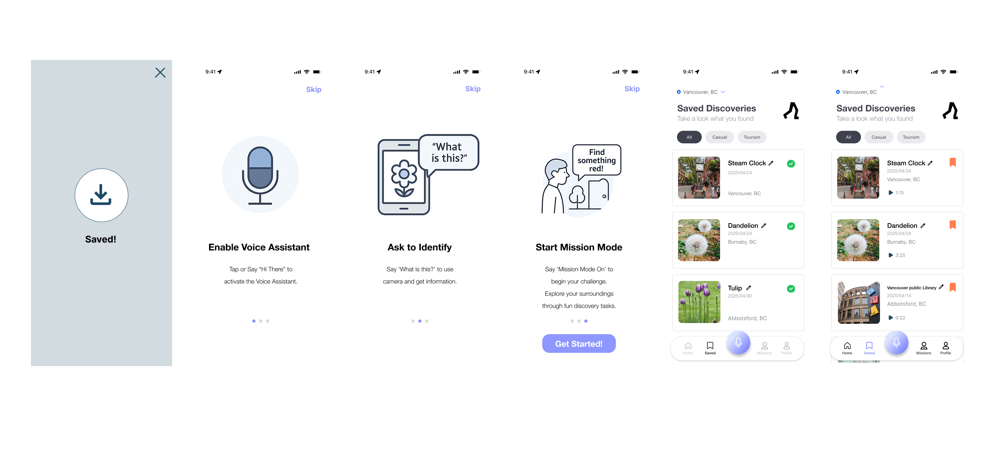
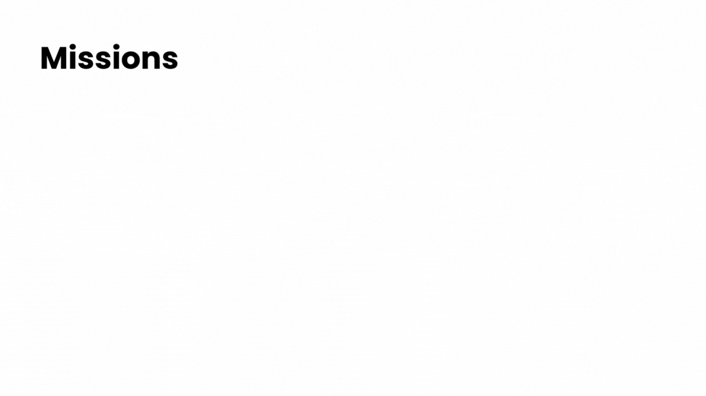
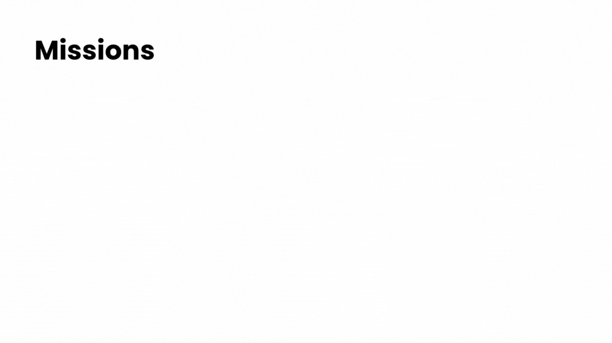

Walk & Wander

課題の背景（教授の意図）
この課題は、学生に 音声インターフェースを前提とした非トリビアルなアプリ設計 を経験させるために出されました。 教授の狙いは、単なる画面遷移ではなく 複数の状態変化やデータ操作を含むUIロジック をデザインする力を養うこと、 そして 手がふさがった状況でも使える人間中心のデザイン を実践することにありました。また、チームでの共同作業を通じて、 プロトタイピングとユーザーテストの重要性を体感することも求められていました。
自分たちのテーマ解釈
私たちはこの課題を「日常の行動を、音声によってより便利で豊かにする体験をデザインする挑戦」と解釈しました。 特に着目したのは、健康のために散歩を始めたものの「暇だ」と感じている父親の悩みです。この身近なインサイトを出発点に、 散歩という単調になりがちな行動を、音声インタラクションによって楽しく充実させるアプリを構想しました。 ユーザー中心設計のプロセス（リサーチ → アイデア発想 → プロトタイピング → テスト → 改善）を通じて、試行錯誤を重ねながら 音声UIの可能性と課題 を探りました。
プロセスの流れ
リサーチ: インタビューと観察から「散歩が退屈」というインサイトを発見。
ブレインストーム: 散歩を楽しくするためのアイデアをブレスト（観光、発見、ゲーム要素）。
ワイヤフレーム: モード切替やミッション表示など、情報構造を整理。
プロトタイプ: FigmaでUIを作成し、ProtoPieで音声インタラクションを実装。
ユーザーテスト:
5名の参加者にテストを実施し、Think-Aloud Method を用いて操作性と楽しさを検証。
試行錯誤: フィードバックを基に、音声コマンドの言い回しやUIのラベルを改善。
リサーチ
「Walk and Wander」では、身近な例として父の生活をより豊かにしたいという思いから着想を得ました。特に、毎日の散歩を単なる運動ではなく、より楽しく充実した体験に変えることを目指しました。 競合リサーチでは、既存のアプリの多くが歩数を計測するだけ、あるいは歩いたルートを記録するだけに留まっていることが分かりました。そこで、散歩の経験自体を向上させる価値に着目し、新しい需要を探ることにしました。
ブレインストーム
3人グループでの制作だったため、まずはそれぞれが個人でアプリのラフ設計を行いました。 チームメイトの一人はカメラと音声機能を重視したレイアウトを提案し、もう一人はユーザーの個人プロファイルに重点を置いた詳細なレイアウトを作成しました。 私は履歴やレコーディング機能を中心としたレイアウトを考案しました。 それぞれの設計には強みがあったため、最終的なデザインでは良い部分をすべて取り入れた統合的な設計を心がけました。
ワイヤフレーム
.png)
プロトタイプ
プロトタイプ１
作成から3週間目に、Figmaで大まかなラフプロトタイプを作成しました。クラス全体の前で発表を行い、不足している点や改善点についてフィードバックをいただきました。
プロトタイプ２
ユーザーテスト

Think Aloudテストでは、参加者に実際にプロトタイプを操作してもらい、思ったことや困惑した点をそのまま声に出してもらうことで、より直感的なアプリを目指しました。 このユーザーテストを通じて、私たちデザインチームが「当然わかるだろう」と想定していた部分が、初めて触る人にとっては混乱を招く要素になっていることに気づきました。 例えば、アプリ自体を「写真記録用」と誤解されたり、説明がないと何のアプリか分かりにくかったり、配色が見えにくい・似たような機能が複数あるなど、数多くの課題が発見されました。
試行錯誤
ユーザーテストでは、「このアプリは何のためのものか分かりにくい」、「ナビゲーションバーが見えにくい」、**「SavedとFavoriteの機能の違いが曖昧」**といったフィードバックを得ました。 これを受けて、アプリ改善として以下の対応を行いました：
- ・初めてログインするユーザー向けに、スキップ可能なチュートリアルを追加
- ・配色やシンボルを変更して視認性を向上
- ・レコーディング機能を追加し、より使いやすい体験を実現
完成品
 


学び
この課題を通じて、UI/UXデザインにおける多くの学びを得ました。まず、ユーザーが「何をするアプリなのか」を直感的に理解できることの大切さを実感しました。ユーザーテストでは、私たちが意図していなかった解釈をされる場面が多く、説明やナビゲーションの分かりやすさが欠けると大きな混乱を生むことに気づきました。 また、一貫したデザインシステムを維持する難しさも学びの一つです。配色、シンボル、余白など細部まで統一することが、結果的にユーザーの安心感や信頼感につながることを理解しました。 さらに、フィードバックを受け入れながら素早く改善するプロセスが、UI/UXデザインにおいて不可欠であることも体感しました。特に、チームメンバーの異なる視点を取り入れたことで、自分一人では気づけなかった問題を多く発見できました。 総じて、このプロジェクトは「デザインは完成して終わりではなく、ユーザーの声を取り入れ続ける反復的なプロセスである」という実感を得る貴重な経験となりました。